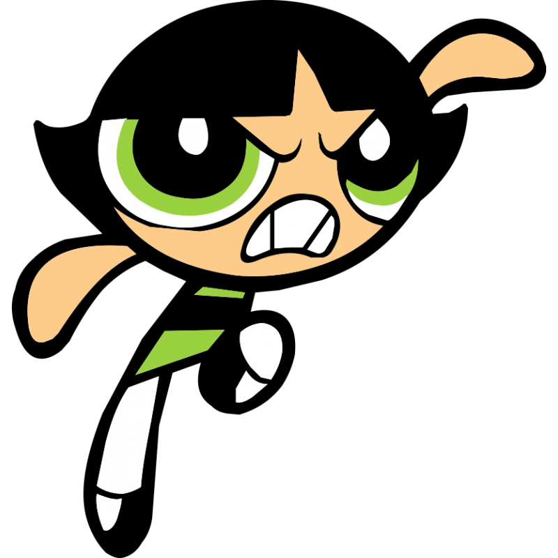

 Buttercup es la más dura del trío y quien toma decisiones espontáneas; el sitio web de Cartoon Network la califica como una tomboy (o alguien que no exhibe rasgos típicamente femeninos).
Las especias definen su personalidad, el verde la representa y su cabello negro con estilo bob no tiene arreglos.